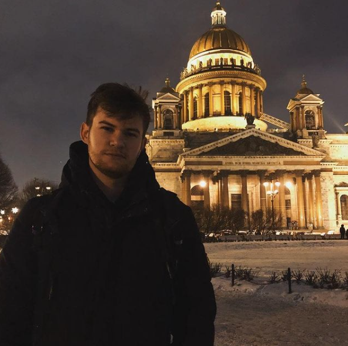

1. Hohlov Evgeny;
2. Phone number: 89319673211 (Viber, Watsapp, Telegram(@slimeshot));
3. I am Purposeful, I live by the principle, I see the goal - I see no obstacles. Until I achieve my goal, I will not calm down.
Responsible, in my student years I lived in a hostel and was the head of the hostel there and led student teams, also was a member of the trade union committee and was responsible for organizing events. Was the head of the circuit boards section.
Punctual, I'd rather come an hour earlier than be a minute late.
I have always enjoyed creating something new. Since childhood, I could not decide which direction to choose electronics or programming. I have a bachelor's degree in electronics and nanoelectronics and a master's degree in photonics. Now I decided to change my specialization. In the future I want to become a hacker.
4. Skills: Github, html, css, php, js, linux, windows, photoshop, figma, altium designer, google=);
5. https://github.com/slimeshot.
6. Work experience: Youtube, code-basics (html, css, js), https://learn.javascript.ru/(js), intensiv HTML accademy(js).
7. Education: Bachelor's degree in electronics and nanoelectronics. Master's Degree in Photonics. intensiv HTML accademy(js). Youtube.
8. Level of English: My English level is A2. I studied language at school, spoke English in online games. Now I work as a guy from America and we communicate in English (using google anslator).